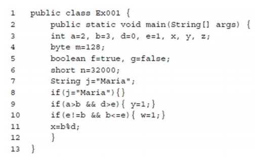
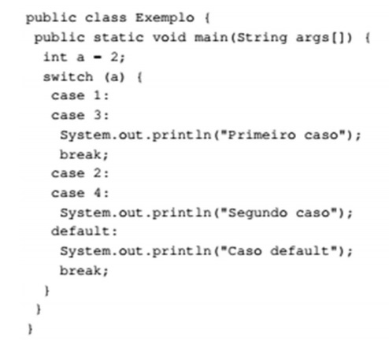
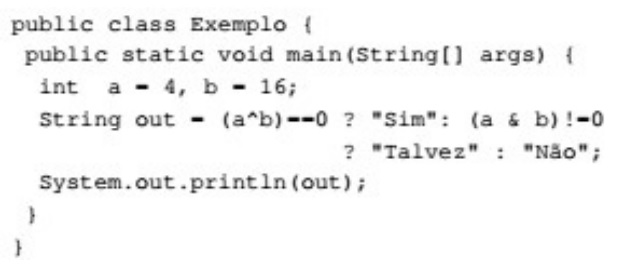
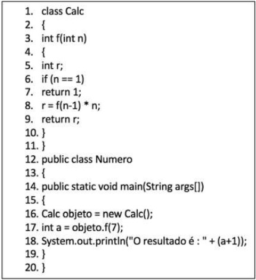
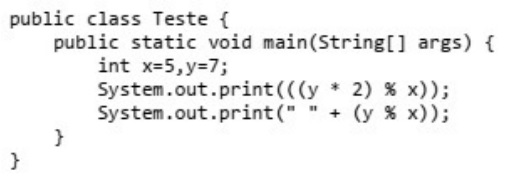

1) Ano: 2018 Banca: FCC Órgão: TRT - 2ª REGIÃO (SP)Prova: Técnico Judiciário - Tecnologia da
Informação
Considere o programa Java abaixo.

Há um erro APENAS nas linhas
2) Ano: 2018 Banca: FGV Órgão: MPE-AL Prova: Analista do Ministério Público - Administrador
de Banco de dados
Sobre as variáveis e os métodos declarados como private, em Java, analise as afirmativas a
seguir.
3) Ano: 2018 Banca: FGV Órgão: MPE-AL Prova: Analista do Ministério Público - Administrador
de Rede
Analise o código Java a seguir.

A execução do código acima produzirá:
4) Ano: 2018 Banca: FGV Órgão: MPE-AL Prova: Analista do Ministério Público - Administrador
de Rede
Analise o código Java a seguir.

A execução do código acima produzirá:
5) Ano: 2018 Banca: CEPS-UFPA Órgão: UFPA Prova: Analista de Tecnologia da Informação -
Desenvolvimento de Web
Considere o código-fonte escrito em Java apresentado no quadro a seguir.

Com respeito ao código fornecido, é correto afirmar que o(a)
6)Ano: 2018 Banca: UFPR Órgão: UFPR Prova: Técnico de Tecnologia da Informação
Considere o programa em Java abaixo:

A saída do programa ao ser executado será:
| LISTA ANTERIOR | PRÓXIMA LISTA |
|---|